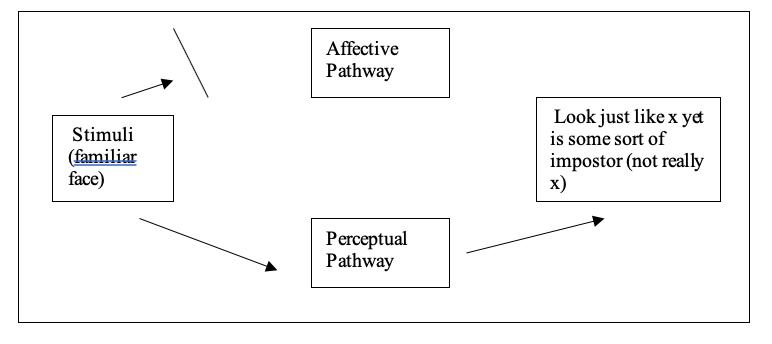

The Capgras and Frégoli delusions are thought to be different kinds of delusions of misidentification. In the Capgras delusion the person seems to be misidentifying someone they were previously close to such as a husband, wife, or child by maintaining that they have been replaced by an impostor, robot, or clone. In the Frégoli delusion the subject would seem to be misidentifying strangers for people who are familiar to them when they maintain that they are being followed by people who are known to them but that they can’t say who they are because they are disguised as strangers. It would seem plausible to consider that both these kinds of delusions of misidentification may arise from a difficulty in processing perceptual information that would normally enable them to recognize familiar people.
Ellis and Young (1990) have outlined a cognitive model of face recognition that attempts to describe something of the process by which normal subjects are able to recognize faces. I shall offer a simplified version of their model for the purpose of drawing out what is relevant to an explanation of delusion. Ellis and Young consider that face recognition requires the proper functioning of two cognitive pathways (See Figure 2).
Perceptual Pathway – When normal subjects are presented with a picture of a face that is familiar to them they are able to report who that person is by providing a name and some biographical details. The function of the perceptual pathway is thought to be to match the current perceptual information of the face to information stored in memory so that the person is able to recall and verbalize information pertaining to the face of the person they have been shown, such as biographical information, and the person’s name. The perceptual pathway is thus considered to be what enables us to overtly recognize faces.
Affective Pathway – When normal subjects are presented with a picture of a face that is familiar to them they have been found to display a heightened skin galvanization response (SGR). This SGR is a measure of autonomic or physiological arousal, and it has been interpreted as being a measure of affective response, or ‘covert recognition’. Ellis and Young, (1990) do not explicitly consider the function of the affective pathway (though I shall consider this in Chapter 4.).
The model was initially developed because it was found that subjects with the neurological condition of prosopagnosia were unable to recognize faces that were familiar to them in the sense of being able to provide a name and biographical details. Subjects with prosopagnosia were able to say that the face seemed familiar to them, however, and they were also found to display a heightened SGR comparable to the response exhibited by normal subjects. Ellis and Young consider that we might be able to understand prosopagnosia as something that occurs when there is a certain kind of breakdown in the normal process of face recognition. This is just to say that the condition may be explained by appealing to a certain kind of breakdown in their model of face recognition. They consider that prosopagnosia is the result of a breakdown in the perceptual pathway and that this breakdown has the result that they are unable to retrieve the name and biographical information pertaining to the face of the person they have been shown. They do display the usual SGR, however, and they are able to say they the face seems familiar, which shows that the affective pathway continues to function normally (see Figure 3).
This model thus seems to handle the normal process of identification and the findings pertaining to subjects with prosopagnosia quite well. If this two pathway model provides a fairly accurate account of the process of face recognition, then it would seem profitable to consider whether the Capgras and Frégoli delusions may be able to be similarly explained by appealing to different kinds of breakdowns in the model of face recognition. Ellis and Young, and Stone and Young (1997) attempted to do just that with respect to offering an account of the Capgras delusion.
Subjects with the Capgras delusion often acknowledge that the alleged impostor looks remarkably like the person whom they have replaced. They are able to report the name of the person that the impostor looks like and they can also provide biographical details of that original person, which subjects with prosopagnosia are unable to do. They thus seem to recognize them on the perceptual level unlike subjects with prosopagnosia. On the affective level, however, it has been found that they do not show the normal heightened SGR to familiar faces (Bruyer, 1991; Young and de Haan, 1992 and Young, 1994 in Stone and Young, 1997 p. 337). It thus seems that they have a breakdown in the affective pathway, though the perceptual pathway remains intact (see Figure 4.). Ellis and Young consider that the Capgras delusion thus arises from a cognitive deficiency that is a ‘mirror image’ of prosopagnosia.
The cognitive model of face recognition may also have prospects for providing a similar sort of explanation of the Frégoli delusion. While this has not been tested, it might be the case that subjects with the Frégoli delusion display an abnormally heightened SGR in response to strangers. If this was found to be the case then it may be that strangers would seem to be known to them, even though the person cannot identify them on the perceptual level, and even though they are not in fact known to the delusional subject.
To get an abnormal production of a SGR response where one should not have been generated may require a slightly different explanation from a lack of response where one should have been generated, as in the Capgras delusion. In the case of the Capgras delusion the notion is that on the physical level there is some kind of lesion or cerebral trauma that is preventing the sending of excitatory signals. Thus the response that should have occurred does not occur because the ‘message’ does not get through the affective pathway. In the case of the Frégoli delusion it may be possible that some kind of neurological abnormality produces excitatory signals where normally none would have been generated similarly to how neurological abnormality can lead to seizure activity. Another possibility would be that there is a breakdown in another pathway that would typically send inhibitory signals to prevent a SGR occurring in response to faces who are unfamiliar (see Figure 5.).
If either of these suggestions are plausible then we can see how there might be an abnormally heightened SGR. While this would seem to be rather speculative and the positing of inhibitory connections may seem rather convoluted in particular, if it is indeed the case that subjects with the Frégoli delusion have an abnormally heightened SGR to strangers then the model would have prospects for explaining the Frégoli delusion. The plausibility of this approach to explaining the Frégoli delusion would be greatly assisted by finding that subjects with the Frégoli delusion do in fact have a heightened SGR to strangers.
It might be natural to think that the two pathway cognitive model would be realized or implemented on two different neural pathways in the brain, and indeed Stone and Young suggest this is the case by identifying the pathways with the dorsal and ventral routes which have been shown to play a role in face processing (see Figure 6.). Breen et al., (2000) have critiqued this notion, however. Breen et al. consider that there is no evidence that the ventral route is capable of the kind of processing that the cognitive model assigns to it. They also maintain, however, that both cognitive pathways could be realized on a branching dorsal pathway and thus their criticism does not disrupt the cognitive model of face recognition, so much as showing that there are issues as to how it is realized on the neural wetware of the brain.
If we accept that an account of face recognition broadly along the lines of that proposed by Ellis and Young, or Breen et al. is correct, and that this model is implemented on neural pathways in the brain (whether on two separate pathways or on a branching dorsal pathway) then cerebral trauma could plausibly lead to various breakdowns in the pathway/s and thus various breakdowns in Stone and Young’s cognitive model of face recognition. While there has been some investigation into the location of cerebral injury the matter is complicated by: relatively coarse grained methods of neuro-imaging (and the expense involved in that), cerebral plasticity, the point that even relatively localised cerebral trauma is often not terribly specific, and so forth. Much more research is needed to clarify the precise nature of the neuro-physiological deficits that are relevant to the production of various kinds of delusion. What has been found, however, is that delusions tend to result from trauma to the right hemisphere and people with comparable trauma to the left hemisphere do not tend to endorse comparable delusions.
It is also a point that psychotic subjects with the Capgras delusion often develop their delusions in a way that seems to run contrary to Stone and Young’s model. Feinburg (2001 p. 35-36) describes such a case where a woman was able to regard an old photograph of her husband to be her husband (which she should not have been able to do by Stone and Young’s account) even though she considered the present man to be an impostor. It would seem that when the Capgras delusion arises within the context of a psychotic disorder an alternative explanation may be required.
One man with cerebral trauma reputedly gave expression to the Capgras delusion when he saw his father, yet he did not maintain that he was an impostor when he spoke with him on the phone. This is the finding that prompted Stone and Young to consider that the Capgras delusion results in problems with processing visual information relevant to the perception of faces. There has been some interest expressed in whether the Capgras delusion might result from a similar breakdown in another sensory modality: might there be a comparable phenomena with respect to the processing of auditory information, for example? I have found several cases of the Capgras delusion occurring in the auditory modality for both blind and sighted subjects (Hermanowicz, 2002; Rojo et al., 1991; Reid et al., 1993).
It has been found that sighted subjects exhibit a heightened SGR to voices who are familiar (Lewis et al., 2001). Lewis et al. reported a case of a sighted person with schizoaffective disorder (a type of psychotic disorder) who developed the Capgras delusion for her sons voice. She was found to have reduced SGR to voices who were familiar compared with non-delusional controls who showed a heightened SGR to familiar voices. It would seem plausible to consider that there may be a comparable two pathway model of recognition of familiar voices that occurs within the auditory modality. Presumably a two pathway model for the processing of auditory information would be realized on a different neural pathway as some subjects may have a delusion occurring in response to an abnormality in one modality while the other modality continues to function normally. It would be interesting to know whether Feinberg’s case had a lack of SGR to her husband’s voice because if her delusion arose from an abnormality in the auditory modality then we would expect her to be able to recognize her husband as her husband in a photograph. The model thus far may be able to explain those kinds of cases.
This two pathway cognitive model of face recognition would thus seem to have fairly good prospects for extension to other modalities as considered in cases where people develop the Capgras delusion in response to familiar voices. Two pathway models of recognition may also have good prospects for being extended to explain delusions that result from stimuli other than familiar faces. Feinberg (2001 p. 37) describes a case of reduplicative paramnesia where a man maintained that
More than 300 items, including Wilkinson Sword razor blades, a Black & Decker electric drill, and assorted mens underwear, had been removed from his home and replaced by nearly identical doubles… While the substituted items bore great resemblance to the originals, the patient noted that some of the substituted items were of inferior quality to the originals.
If this two pathway cognitive model is accepted as a model of face recognition then it may be the case that there is a similar process (of two pathways) being involved in the recognition of objects as well. This subject would seem to have something comparable to the Capgras delusion, but in this case for objects rather than for faces.
One lady was even reported to have developed a delusion of misidentification saying that her canary had been replaced by an impostor (Rosler et al., 2001 p. 429). It may seem that this is a distinct process from the Capgras delusion as it occurs in the perception of faces because someone who has the Capgras delusion for a person might not have reduplicative paramnesia for any objects, and vice versa. It soon becomes obvious that if we simply posit an independent recognition mechanism with a different neural instantiation to account for every different object and modality in the different kinds of delusions of misidentification then such an explanation may come too cheap. What lent plausibility to the two pathway model of face recognition was the independent evidence in support of the notion that the dorsal and ventral pathways were involved in the visual perception of faces. There was also further support with the finding of subjects with prosopagnosia because here we have a case of the other pathway (the perceptual pathway) breaking down, and thus there is independent evidence for the positing of two independent pathways. Without such independent evidence the positing of a two pathway mechanism and the positing of a neural pathway seems to be somewhat ad hoc.
While Stone and Young, (1997 p. 346-347) maintain ‘The person who forms the Capgras delusion suffers from a perceptual deficit that leads to familiar faces losing their normal personal affective significance’ and that ‘the person thus suffers a specific form of anomalous perceptual experience’ it would still seem to be far from obvious how an abnormal SGR results in delusion. Normal subjects are not even aware of producing a heightened SGR to familiar as opposed to unfamiliar faces. So it may be hard to see how the lack of a response that people are not normally aware of having that could result in a delusional belief. While it does not necessarily follow from the point that they have a lack of experience of SGR that they have an experience of a lack of SGR, it is thought that the discrepancy between the response that should have occurred and the response that does occur leads to a person level conscious anomalous experience.
A way around this problem of inventing a new two pathway mechanism to account for each kind of delusion of misidentification might be to consider that what is relevant to the development of delusions of misidentification is the emotional (or affective) significance that the object of the delusion has to the delusional subject. Perhaps it is the case that it is the lack of SGR to an object that is significant (which is to say to an object that would have produced the strongest SGR prior to the cerebral trauma) that determines the object of the delusion. Perhaps the relevant mechanism isn’t necessarily to do with the perception of faces; rather it is more to do with the perception of objects of significance whether they be people, canaries, or other kinds of objects. This seems to be supported by Rosler et al’s suggestion that
Usually the misidentification involves a person with whom the patient has an "intense affective sentiment." Our patient had no close person in her own environment who fulfilled this role. Instead, her canary had become her closest living companion… The lack of personal contact in her social environment may have identified her pet canary as the focus for her delusion. (Rosler et al., 2001 p. 429)
There may be a similar type of explanation for Feinberg’s case of reduplicative paramnesia.
It would assist us to know more about the SGR responses exhibited by normal subjects in response to various stimuli, and more in particular, to stimuli they report feeling particularly attached to (and have strong SGR responses to) as opposed to objects that they aren’t as attached to despite those objects being familiar to them as well.
It would seem plausible to consider that prior to head injury the person with the Capgras delusion would have produced the strongest SGR to people who were close to them such as a wife, husband, or child, though it should be said that this has not been tested. If this were so then post head trauma the difference between the response that should have occurred and the response that does occur would thus be the greatest for their loved ones. This is thought to go some of the way towards explaining why it is that the Capgras delusion is typically focused on people who were close to them rather than being focused on mere acquaintances. This would seem to be an alternative explanation to the psychodynamic accounts that were historically offered where the reason why the delusion tended to be focused on people who were close was because the delusional subject was unsuccessful in repressing hatred for the object of the delusion and thus needed to repress knowledge of who the person was in order to reconcile the conflict.
The anomalous experience is important with respect to the prospects for a psychological explanation of delusion as without an anomalous experience the cognitive model describes purely sub-personal processes and states. The normal functioning, and indeed the breakdown of the cognitive model and the resultant SGR are not person level states and thus the model does not describe psychological states or processes in the sense that Searle (1992) considered that psychological states and processes must be capable of being consciously experienced by the subject in order to count as psychological states / processes. Stone and Young maintain that a breakdown in this model produces an abnormal SGR, and the abnormal SGR leads to a consciously experienced state: a ‘specific form of anomalous perceptual experience’. It is because this state is consciously experienced by the subject that the state would count as a psychological or person level state. If we can explain delusion by recourse to a prior psychological state – that of an anomalous experience – then Stone and Young’s model would seem relevant to the psychological explanation of delusional belief.
The psychological theorist Brendan Maher, (1999; 2003) similarly considers that a neurophysiological anomaly results in the production of an anomalous experience for the delusional subject. Though Maher does not consider Stone and Young’s cognitive model of face recognition or the role of SGR in the production of anomalous experience, what he does have to say about neuro-physiological anomaly and anomalous experience is consistent with Stone and Young’s line. Maher considers that an anomalous experience of a certain intensity and duration will result in a delusional belief. He considers that anyone who were to have such an experience would develop comparable delusional beliefs.
Maher considers that ‘the origins of anomalous experience may lie in a broad band of neuropsychological anomalies. These include but are not confined to…’ and he goes on to consider 6 kinds of neuropsychological anomaly which are listed in Table 3. (Maher, 1999 p. 551).
| 1 | Endogenous neural activation of the feeling of significance normally triggered by pre-conscious recognition of changes in a familiar environment. |
| 2 | Unrecognised defects in the sensory system, such as undiagnosed hearing loss, or the endognous activation or inhibition of the central neural representations of sensory input. |
| 3 | Temporary alterations in the intensity and vividness of sensory input, as in some forms of drug intoxication. |
| 4 | Neurologically based difficulties in the focusing of attention with consequent difficulty in discriminating between situationally relevant and irrelevant elements of the environment. |
| 5 | Experienced discrepancies between the willed intent of a response and the actual form of the response. |
| 6 | Impairment in the monitoring and calculation of recurring sequential probabilities in environmental events that is necessary to anticipate and respond effectively to later elements in the sequence. |
While Maher is primarily interested in offering an account of schizophrenic delusions rather than delusions arising from cerebral trauma, he does however state that:
[D]elusional interpretations of circumscribed anomalies of experience arising from psychopathology are not confined to schizophrenia. . . .[T]he model of delusion formation . . . posits that the basic origin lies in the anomalous experience, regardless of how that anomaly arose (Maher 1999, p.566).
Maher is thus attempting to offer an account of delusions in general. In what follows I shall focus on how Maher’s line would apply to an explanation of the Capgras delusion.
Maher considers that a neuropsychological anomaly of the kind listed in Table 2. produces an anomalous experience for the delusional subject. He considers anomalous experiences to be ‘primary’ in the sense that
They have the same quality of irreducible directness as do such experiences as sensory experience of color, the feeling of physical pain, the experience of sound, and other sensations. Unlike these experiences, they cannot readily be attributed to identifiable external stimuli or internal somatic structures. Being primary, they do not arise as the end result of prior rational analysis, and cannot be altered by rational analysis. The qualities of primary experiences are beyond the reach of argument (Maher, 1999 pp. 552-553).
While Jaspers (1959) maintained that delusions could not be explained by recourse to the subject’s prior perceptions, experiences, and beliefs, and thus he considered that delusions are beyond the reach of psychological explanation, Maher considers that delusions can be explained by recourse to the subject’s prior anomalous experiences. If Maher is right in maintaining that delusions can be explained by recourse to the subject’s prior anomalous experiences then it would seem to be the case that psychological explanation would have a prior psychological state (that of anomalous experience) that could be appealed to in order to explain delusional belief from the psychological level.
Maher considers the anomalous experience ‘may be a feeling that one has become aware that something significant has happened, and that the feeling is primary and intense enough to be convincing (Maher, 1999 p. 552)’. I shall focus on the first kind of anomalous experience which he enumerates as this would seem to be the most relevant for an explanation of the Capgras delusion. The first anomalous experience consists in ‘feelings of non-recognition: something is different’. He considers that
‘The point of this kind of experience is that we begin with a “feeling” that something is different and then we try to find out what it is that has changed. The chronology of the experience does not begin with the conscious identification of the changed element. It begins with a vague general feeling that prompts us to look for a changed element… This feeling is, most probably, stimulated by a neuropsychological process arising when some stored icon of the expected usual appearance of the person or object is activated by the encounter but mismatches the current actual input of that appearance… (Maher, 1999 p. 554).
Maher thus considers that the delusional subject has an anomalous experience and that delusions are attempts at explanations for the anomalous experience. I shall come back to the point that some theorists consider delusions to be attempts at explanations in Chapter 3. I shall contrast this with the notion that the content of the belief may be given by the content of the anomalous experience directly without a step of inference. Maher considers the anomalous experience to be a ‘vague general feeling’ and thus there needs to be a step of inference between the content of the general experience and the content of the delusional belief that the subject arrives at in the attempt to explain their anomalous experience. Maher considers that in this particular case there is a mismatch between the memory of the person and the present percept of the person, which seems similar to Campbell’s second interpretation of the Capgras delusion where ‘this [perceived] woman is not that [remembered] woman’. Maher continues:
We can summarise the essence of these examples [of different kinds of anomalous experiences] as indicating that discrepancies between expected and perceived input are very often monitored at a level below the threshold of conscious experience, and when detected at that level give rise to primary feelings. These feelings have in them an element of discomfort and uncertainty that prompts a conscious search for the discrepancy’ Maher, 1999 p. 556)
The notion is that a sub-personal discrepancy is responsible for the production of an anomalous experience. This seems similar to Stone and Young’s suggestion of a sub-personal discrepancy occurring in the processing of visual information relevant to the perception of faces, and indeed we can think of Stone and Young’s model as a more detailed specification of the sub-personal breakdown that Maher considers to be implicated in various kinds of delusions.
Maher considers that when the anomalous experience is intense and prolonged, the person is led to develop a delusion in response to their anomalous experience. While normal subjects may have similar kinds of experiences in their daily lives they are not compelled to explain their experiences in the way that a person who has more intense and prolonged experiences is. He considers that when the experience is less intense then people may be able to come up with alternative explanations, such as that the person has had a hair cut or is wearing a different kind of tie. When the experiences are intense and prolonged, however, then such attempts at explanation fail to terminate the anomalous experience for the subject. The subject is thus led to adopt a delusional explanation for their anomalous experience. Maher considers that delusion is the inevitable result of such an attempt to explain or make sense of such an intense and prolonged anomalous experience. He concurs with Reed’s claim that
[G]iven the necessary information, the observer can empathize with the subject; if he himself were to have such an unusual experience he would express beliefs about it which would be just as unusual as those of the subject… They can occur in anybody who experiences disturbing phenomena, while retaining the ability to think clearly enough to be able to devise explanations of those phenomena (in Maher, 1999 p. 551).
Maher thus specifies the content of the anomalous experience that is relevant to the production of the Capgras delusion as ‘feelings of non-recognition: something is different’ in response to the stimuli of familiar faces. What may still be unclear is how or why intensity and duration of an experience could be the crucial difference that determines that a subject must arrive at a delusional explanation for their experience.
Maher maintained that an anomalous experience of a certain (unspecified) intensity and duration is both necessary and sufficient for delusion. There may be two different ways in which we could interpret his claim. The first way might be to consider that the anomalous experience is both necessary and sufficient to determine whether a subject will develop a delusion or not. The second way we could interpret the claim would be to consider that the kind of anomalous experience determines the kind of delusional explanation that the subject will adopt. While the causes of depression may be hard to pinpoint, it does seem clear that people with clinical depression tend to benefit from psychotropic medications. What people have surmised from this is that in depression something has gone wrong with levels of neurotransmitter in the brain. The medication is thought to assist because it helps rectify the problem. If depression is left untreated, however, then some people can deteriorate over time, becoming more and more depressed and their SGR become progressively dulled, or muted. Subjects begin with making claims that they don’t feel real, or that they feel disembodied, and if they continue to deteriorate they may eventually reach the conclusion that they are dead. The Cotard delusion is now even rarer than it once was as modern advances in psychotropic medications now largely prevent people deteriorating to that level.
In other cases people develop the Cotard delusion in response to cerebral trauma. They may have been involved in an accident that has resulted in damage to parts of their brain, or a blood vessel may have burst which may result in a similar kind of damage. People who develop the Cotard delusion in response to cerebral trauma may suffer from other conditions, some even suffer from other kinds of delusion as well. It has been found that these people also exhibit a muted SGR.
So, subjects with the Cotard delusion have been found to exhibit a comparable loss of SGR similarly to subjects with the Capgras delusion. If the anomalous experience is determined by the difference between the SGR that should have occurred and the SGR that is generated then it would seem plausible to consider that Cotard and Capgras subjects have the same kind of anomalous experience. If the anomalous experience of subjects with the Cotard delusion is the same as the anomalous experience of subjects with the Capgras delusion then it would seem that the kind of anomalous experience is not sufficient to determine that the subject develop one of these delusions as opposed to the other.
The person with the Capgras delusion only has the loss of normal SGR when presented with the stimuli of a familiar face however. The person with the Cotard delusion would seem to have a more global loss of SGR in response to a greater variety of stimuli. Some theorists have thus been led to consider that the anomalous experience of subjects with the Capgras as opposed to Cotard delusion must be different. A problem with this line of defense is that the Cotard and Capgras subjects would appear to have the same loss of normal SGR when they are presented with the stimuli of familiar faces. While the person with the Cotard delusion does have a more global loss of affective response this does not seem to entail that their experience when they are looking at familiar faces is any different from the person with the Capgras delusion. It may be puzzling why the person with the Cotard delusion does not arrive at the Capgras delusion in addition to having other bizarre beliefs related to their loss of affective response to other stimuli. Indeed, the person with the Cotard delusion would also seem to have a loss of affective response to familiar objects and so it may be puzzling why they do not have delusions comparable to the people with reduplicative paramnesia who maintain that their personal belongings have been replaced by duplicates.
We could of course maintain that SGR does not determine the nature of the anomalous experience. We could maintain that there are different mechanisms that are responsible for the production of the appropriate SGR in the Cotard delusion compared with the delusions of misidentification that we have considered. If different mechanisms are involved then the anomalous experience of subjects with the Capgras as opposed to Cotard delusions could thus be quite different even though there is a comparable loss of SGR. The problem then becomes to specify in more detail the nature of the difference in the experience of subjects with these different kinds of delusions. The best way to go about this may well involve specifying in more detail the nature of the mechanisms that are failing differently in these different cases. I shall return to this in Chapter 4.
With respect to the weaker interpretation of Maher’s claim – that the intensity and duration of the anomalous experience determines whether a subject will develop a delusion or not we might consider that there may be alternative hypotheses that the delusional subject could also adopt as an explanation for their anomalous experience. Why is it that subjects with the Capgras delusion maintain that their wife has been replaced by an impostor as opposed to the hypothesis that something has gone wrong with their brain / affective response system? It would seem that either hypothesis could result from the kinds of anomalous experience that we have looked at thus far and so the presence of an anomalous experience would not seem to be enough to determine that the subject must develop a delusion in response to it. This is problematic for the model in which anomalous experience is both necessary and sufficient for the production of delusion as it would seem that a subject with the anomalous experience that is relevant for the development of the Capgras delusion may or may not develop a delusion as there are two different hypotheses that could be adopted and only one of these would be considered to be delusional. These considerations seem to put pressure on Maher’s account of delusion and more must be said about the relationship between certain kinds of anomalous experiences and certain kinds of delusions for us to see how delusion is an inevitable response to anomalous experience.
Maher considers both the role of neuro-physiological deficit, and the resultant anomalous experience in the production of delusion. His account of delusion has been considered to be a one-factor model in the sense that he attempts to offer a psychological explanation of delusion that relies on a single psychological factor – that of an anomalous experience. The neurophysiological deficit is not a psychological factor so Maher thus does not offer a psychological explanation of the anomalous experience. The anomalous experience is thought to be a psychological state, however, and it is in virtue of this that Maher is considered to offer a one factor psychological explanation of delusional belief.
We have already considered that there may be problems with Maher’s thesis that an anomalous experience is both necessary and sufficient for delusion. Two-factor theorists depart from Maher by considering that while an anomalous experience would seem to be the first factor in a psychological explanation of delusion, an anomalous experience would not seem to be sufficient to determine that the subject develops a delusion in response. Two Factor theorists consider that delusions would not seem to be ‘normal’ or ‘rational’ responses - despite the nature of the delusional subject’s experience. Davies et al., (2002 pp. 136-137) present a battery of eight different types of delusion and they suggest that a prospective account should be assessed for adequacy with respect to how well it can explain each of these types. They consider that the anomalous experience that is relevant to each of these kinds of delusion is one that is experienced by both delusional and non-delusional subjects. They thus consider that while an anomalous experience may be necessary for delusion, it cannot be sufficient. As such they consider that Maher’s account of the role of anomalous experience needs to be supplemented by a second factor. It is this second factor that is supposed to determine whether a subject will develop a delusion in the face of an anomalous experience.
Empirical models of delusion are thought to be ‘bottom-up’ as they attempt to explain delusions by recourse to sub-personal neurological or cognitive states and the person level anomalous experiences of subjects. This can be contrasted with the ‘top-down’ rationalist or analytical treatment of delusions offered by Jaspers and Campbell who were left concluding that one cannot offer a psychological explanation of delusion. Davies et al., distinguish between two types of empiricist accounts. The first is the one-factor style account offered by Maher where delusions are considered to be inevitable responses to certain kinds of anomalous experiences. The second type of empiricist account is the two-factor accounts of theorists who maintain that a second factor is required in order to determine that a person develops a delusion in response to an anomalous experience. I shall now turn to considering four attempts to enumerate the nature of the second factor in the explanation of delusions.
[Next]